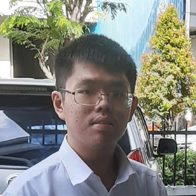
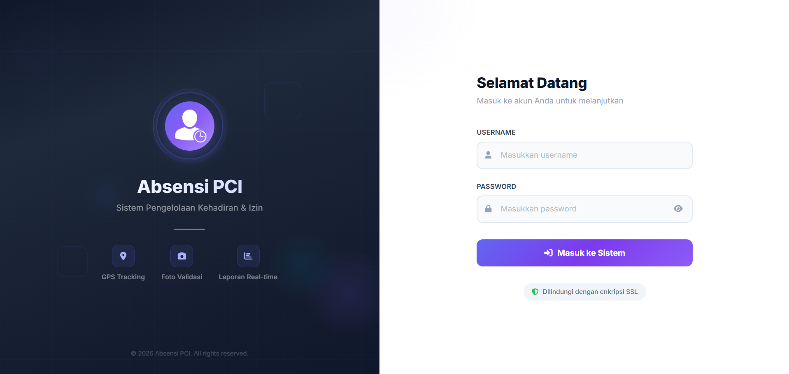
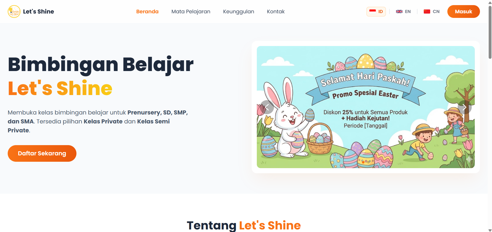
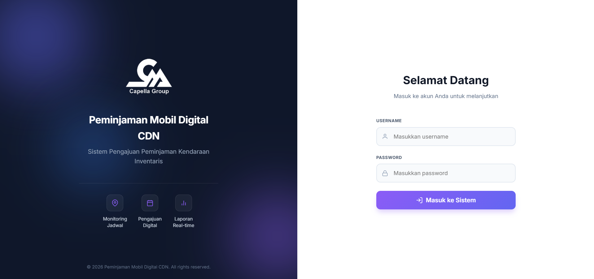

Seorang mahasiswa Sistem Informasi yang memadukan keahlian teknis pengembangan web dan manajemen basis data dengan ketajaman audit operasional serta komunikasi strategis, untuk mendukung tata kelola sistem perusahaan yang efisien dan aman. Memiliki pengalaman sebagai General Affair dalam persiapan memenuhi kondisi yang dibutuhkan perusahaan dengan manajemen dan komunikasi yang aktif.
Merancang pondasi sistem informasi yang kuat dan dapat berkembang seiring dengan kebutuhan operasional harian perusahaan.
Mengutamakan standar keamanan data dan kepatuhan prosedur regulasi internal dalam setiap baris kode yang ditulis.
Memangkas birokrasi dan kendala administratif melalui sistem otomasi yang tepat sasaran dan mudah digunakan.
- Spesialis Pengadaan dan Inventaris
- Membantu proses rekrutmen HR dan proses administrasi
- Membantu Pemeliharaan & Perbaikan untuk perusahaan
- Berkomunikasi dan bernegosiasi dengan vendor untuk Pembelian dan MR (pemeliharaan & perbaikan)
- Mengelola anggota Outsourcing untuk acara, permintaan, dan sebagainya
- Memenuhi kebutuhan Manajemen
- Analisis dan Verifikasi susunan budget/anggaran acara
- Menangani pembelian, perbaikan perangkat, dan inventaris untuk Kantor Regional dan 6 Kantor Cabang Penjualan di Batam
- Menjual inventaris perusahaan sesuai instruksi/permintaan
- Kontrol Kualitas untuk pembelian dan kinerja outsourcing
- Komunikasi dan negosiasi tergantung pada situasi atau tugas yang diberikan
Fokus pada operasional logistik dan pergudangan.
Keahlian: Sorting dan Category Management.

Sistem absensi digital untuk skripsi menggunakan metodologi Waterfall. Dilengkapi fitur deteksi geolokasi dan verifikasi selfie tingkat lanjut untuk memastikan kehadiran autentik. Mencakup modul pengajuan izin terintegrasi.

Sistem manajemen bimbingan belajar web end-to-end yang dibangun dari nol menggunakan native PHP, MySQL, dan Bootstrap. Dilengkapi fitur multi-language dan berhasil mendigitalisasi administrasi sehingga meningkatkan kecepatan pemrosesan data sebesar 40%.

Sistem pengajuan peminjaman kendaraan inventaris. Memiliki fitur monitoring jadwal kendaraan, pengajuan digital, dan pembuatan laporan penggunaan kendaraan secara real-time.
Penelitian ini mengembangkan Sistem Pendukung Keputusan (SPK) menggunakan metode Simple Additive Weighting (SAW) untuk membantu pemilihan pengajar les yang paling optimal bagi siswa di lembaga bimbingan belajar berdasarkan kriteria tertentu.
Tampilkan PublikasiKualifikasi resmi dalam standar kepatuhan operasional untuk menjamin kualitas proses manajemen.
Buka Layar PenuhSertifikat penyelesaian program Online Short Course dari Dicoding & Microsoft Elevate Training Center.
Buka Layar PenuhMencari profesional IT yang dapat mengawinkan efisiensi sistem dengan keandalan operasional? Mari diskusikan peluang kolaborasi kita.
Kirim Pesan Sekarang